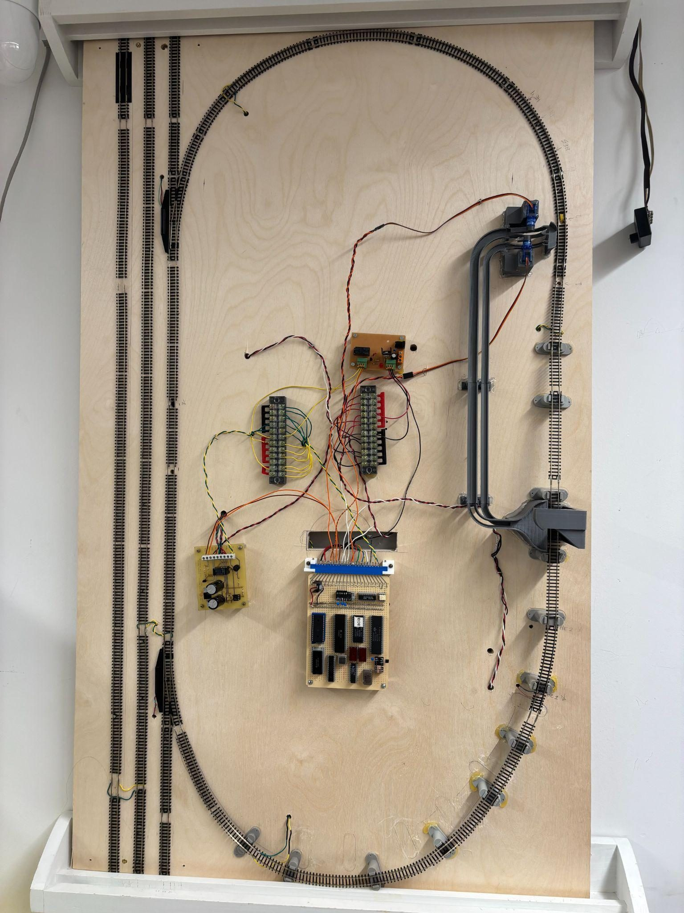
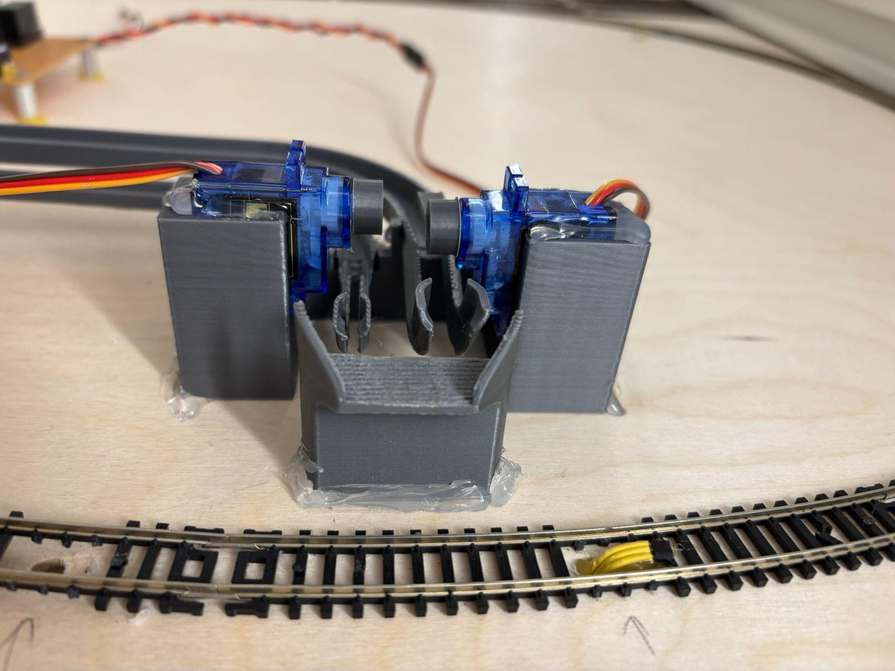
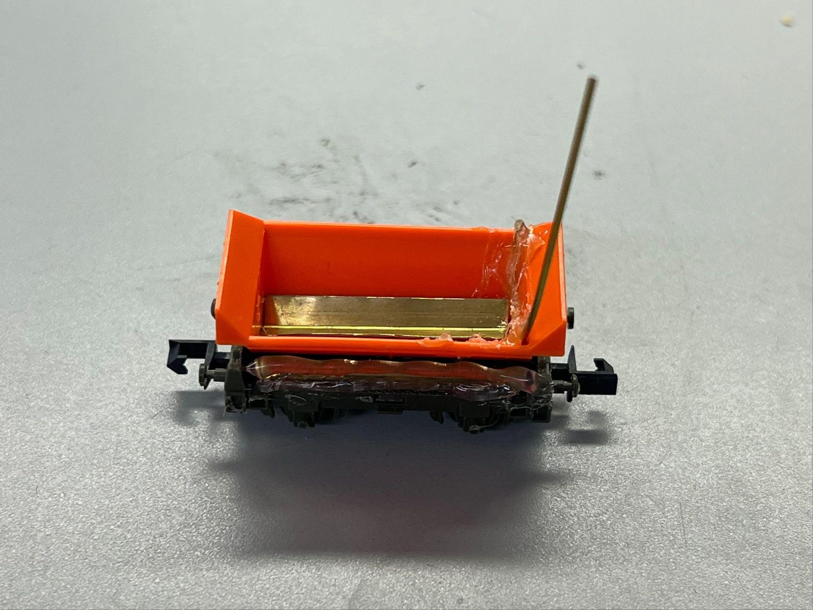
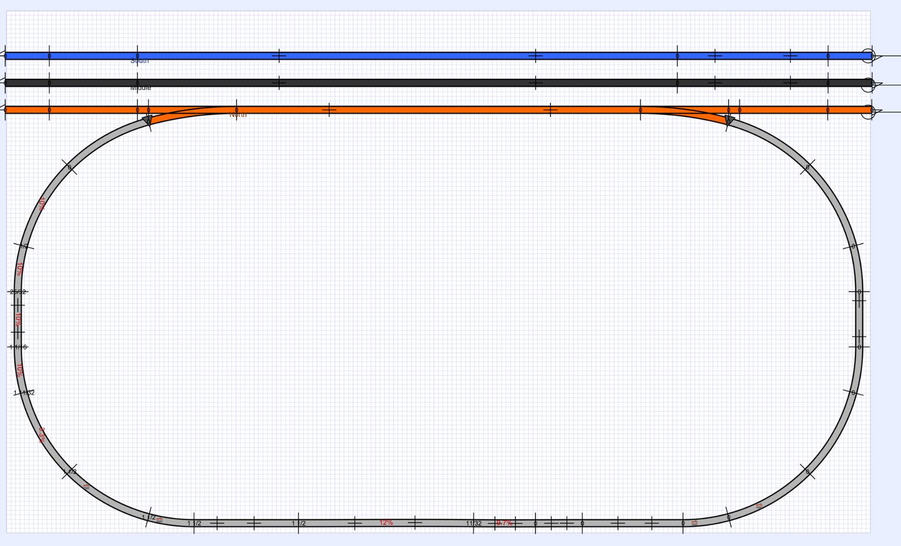
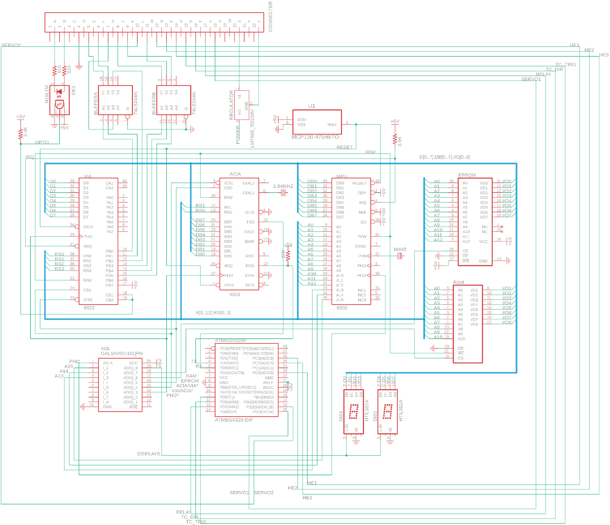
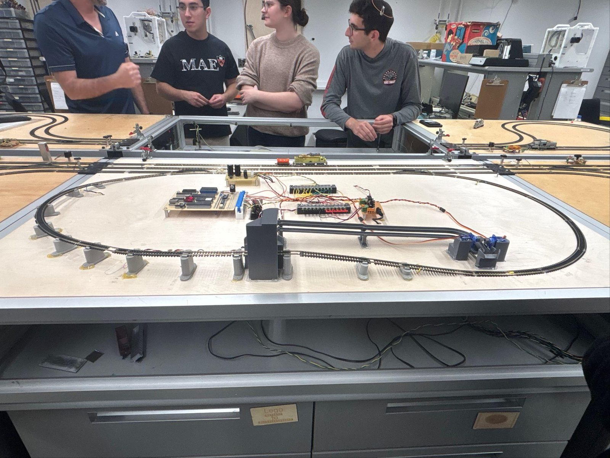

MAE 412 Microprocessors for Measurement & Control
Automated railway
A machine that unloads a train, sorts what it finds, and loads the next one
Bench 8, with Maya Sessions and Susan Zhang. Prof. Michael Littman.
The assignment was a controlled railway. The stretch goal — reloading, not just unloading — turned it into a sequencing problem, because the machine has to remember what it took off to put the right thing back.
Approach
Hall-effect sensors produce position events; everything downstream is a state machine reacting to them. Sensor one throws the switches into the inner loop, sensor two kills track power for unloading, sensor three stops the train for reloading and sends the switches back to straight.
Sorting runs on coin-sorter geometry and a parity scheme rather than extra sensing — fewer parts, countable failure modes. Block control meant tolerating three trains on the board at once, with no magnets or markings to tell them apart.
What we built
3D-printed unloading, sorting, and loading mechanisms; a modified trailer that tips to 60° along a curved cam as it passes a fixed structure; relay and trickle-charge daughterboards; the sequencing in assembly; and an ACIA serial link so a host can command the board mid-run.
Result
Four balls across two sizes, handled hands-free: unloaded, sorted, reloaded, repeatably, in the class demonstration. For a mechanism with this many independent moving parts, repeatable is the actual test.
Documentation

Drop file atassets/railway/board.jpg

Drop file atassets/railway/switch-servos.jpg

Drop file atassets/railway/wagon.jpg

Drop file atassets/railway/track-layout.png

Drop file atassets/railway/schematic.png

Drop file atassets/railway/bench.jpg